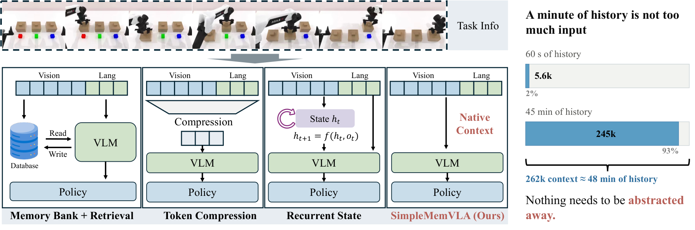
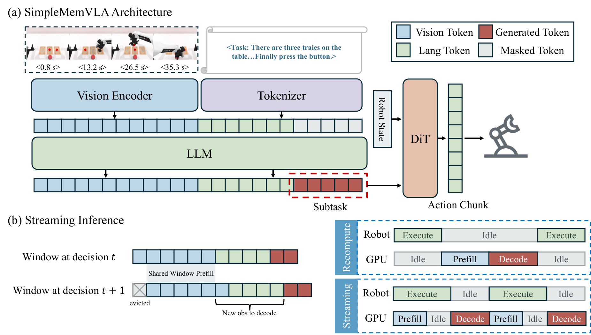
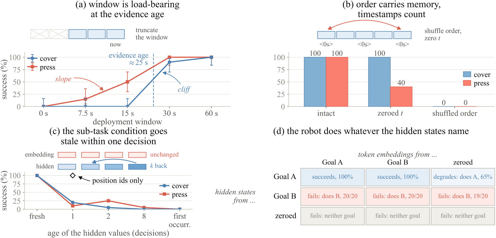
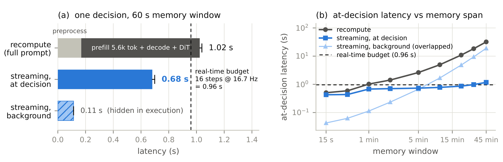

能拿到的是一句很硬的工程结论：在 4B 级 VLM backbone + 262k 上下文的时代，把 60 秒带时间戳的历史视频原样喂进去、只在动作头前留一条 sub-task 隐状态通道，就足以在四个记忆基准上压过所有检索/压缩/循环记忆实现（RoboMME 88.3% vs. 同栈检索 31.5%）。代价是把「记忆设计」换成了「上下文预算管理 + 前缀缓存工程」。
- 最小可复用件
- 「历史 = 时间戳化的原生视频 token 序列 + 每决策重新生成一句 sub-task、只让它的 hidden states 进动作头」这套接口，连同 60 s 滑窗与共享前缀 prefill。
- 主要风险
- 前缀复用依赖 token 序列逐字不变，而正文用的是窗口相对时间戳；窗口滑出后标签整体平移，论文把这一冲突留到附录 F 的 episode-absolute 变体才解决。
- 复现门槛
- Qwen3.5-4B backbone + DiT flow-matching 动作头；每套基准一次训练，128×H100 上 14–28 小时；另需云端 VLM 离线标注每帧 sub-task 文本。真机部分另需 180/308 条双臂示教。
1 核心摘要
长时程操作是部分可观测的：决定下一步动作所需的信息，可能只出现在几十秒甚至几分钟前的某一帧里——哪个盖子下面藏着红块、被遮挡的目标被放到了哪、这个动作已经重复了几次。而绝大多数通用 VLA 只以单帧或亚秒级窗口为条件，这类任务对它们是原理上不可解的：两个当前观测完全相同的状态需要不同的动作。
已有的记忆机制可以分成三族：检索库（外部存储 + 索引取回若干帧）、学习式压缩（把历史塞进固定 token 预算）、循环状态（不断用新观测覆盖一个紧凑隐状态）。论文把它们的共同前提命名为 write-time commitment（写入时承诺）——在还不知道未来决策需要什么的时候，就必须决定历史里哪些内容保留下来。检索会漏掉没被取回的帧，压缩会丢掉细节，循环更新会覆盖旧证据，而这些被丢掉的东西可能恰恰是后面要用的。
SimpleMemVLA 的做法是拒绝这个承诺：不设任何独立记忆模块，把最近 \(T_w\) 秒的头相机历史按 \(f_v\) 采样成至多 \(K=T_w \cdot f_v\) 帧，以 backbone 预训练时就熟悉的「带明文字时间戳的视频」格式送进视频通道；backbone 生成一句当前子任务描述 \(g_t\)，只有这段文本的 contextual hidden states 与 token embeddings 经融合后进入标准 flow-matching 动作头。第二个工程支点是流式推理：相邻两次决策的历史窗口只差一个新到的 temporal patch，于是在机器人执行当前动作块时把共享前缀 prefill 好并缓存 KV，下次决策只处理新增 patch 与指令。
论文报告的关键数字：RMBench 94.0%、RoboMME 88.3%、MIKASA-Robo 74.0%、RoboMemArena TSR 63.6%；在同样的 backbone、数据与训练设置下重建三族机制，RoboMME 上分别只有 31.5%（检索）、22.6%（token 压缩）、20.6%（循环状态）；60 s 窗口下单次决策延迟从 1.02 s 降到 0.68 s（同模型单帧约 0.65 s），输出与全量重算一致。
判定：这不是又一个记忆模块，而是一篇「把记忆模块的必要性证伪掉一半」的对照组论文——它证明在 episode 内、分钟级、单路头相机的设定下，注意力本身就是最好的记忆；但它对跨 episode、超长跨度、多相机历史这几类真正撑爆上下文的场景并没有给出答案。
2 记忆环节定位
它主命中「记忆表征」与「动作接口」，部分命中「写入触发」与「长期维护」，几乎不命中「索引与检索」——这正是全文的论点所在。所谓检索并没有消失，而是从「显式建库 + 取回」变成了「read-time 的注意力选择」：谁被读到由当前 query 决定，而不是由写入时的索引决定。写入触发也只剩一个固定的采样节拍（每 \(1/f_v\) 秒一个 patch），没有任何事件检测或重要性判定。
| 维度 | 内容 |
|---|---|
| 输入 | 头相机历史视频 \(V_t = [o^h_{t-(K-1)s}, \ldots , o^h_{t-s}, o^h_t]\)，步长 \(s = f_c/f_v\)；当前腕部相机帧（走 image 通道，不带时间戳）；语言指令；本体感知状态 \(q_t\)。提示里还附一段纯文本，说明本体、相机布局与时间戳约定。 |
| 输出 | 一句当前子任务 \(g_t\)（普通 assistant 回复，不是 CoT）→ 其 hidden states 与 token embedding 融合后的条件序列 \(C_t\) → flow-matching 动作头输出长度为 \(H\) 的动作块。 |
| 交给下游 | 只有 \(C_t\)。动作头拿不到任何 prompt token，所有依赖历史的信息必须挤过 sub-task 这一条窄通道。这是全文最强的结构约束，也是它可解释、可干预的来源。 |
| 在线性 | 因果：只用 \(o_{ \le t}\)，不用未来帧，不用 oracle 状态。记忆有硬容量上限（窗口按套设定 3–126 s，RMBench/RoboMME 与真机均为 60 s；真机 2 fps / 至多 120 帧）；遗忘策略是滑动窗口淘汰最旧 patch。不做跨 episode 记忆。 |
三个必须回答的问题：记忆单位是一个 temporal patch——视觉处理器把相邻帧成组，每 patch 前加 backbone 原生明文时间戳，附录 F 给出其 token 构成约为「时间戳 6–8 token + 视觉分隔符 + 80 个视频 token \(\approx 88\)–90 token」；写入频率是固定节拍，2 fps 采样下 2 帧并成一个 patch，即约每 1 秒写入一个 patch（每套基准的 \(T_w/f_v/K\) 见表 8）；读取条件是「每次决策都读全窗」，没有触发阈值——每生成一个新动作块之前，整个窗口都会被重新注意力一遍。
3 问题与动机
3.1 三族机制各自的失败模式是具体的
论文没有写「现有方法不够好」，而是逐族指出信息在哪一步被丢掉：
- 符号存储（scene graph、concept bank、execution state）：观测被写进预定义 schema，schema 词表之外的信息在抽取时就没了，而且这与感知精度无关。论文的对照实验非常锋利——把 GroundSG 喂上 ground-truth VLM 输出，等于「写入环节零误差、零容量限制」，RoboMME 仍只有 84.1%，低于原始视频流的 88.3%；换成真实感知再掉约 50 点到 32.7%。
- 检索：索引在当前 query 到达之前就建好了，没被取回的帧连同它们的顺序与时间戳，对该次决策永久不可见。论文的检索重建版只保留 8 帧均匀采样，Permanence 能到 42.0%，但两个 swap 任务只有 14–20%、PatternLock 只有 10.0%——因为它拿到的是一个无序集合。
- 压缩：预算在观测时就固定，必须先决定保留哪些感知细节。重建版把全历史压成 64 token，在 SwingXtimes 上 92%（原生为 96%），但 Permanence 13.5%、Reference 12.5%——它能留住「计数总和」，留不住「具体的那一次感知」。
- 循环状态：每次更新都要决定覆盖什么，覆盖后无法恢复。16-token 状态整体 20.6%，Counting 尚有 31.0%，Permanence/Reference/Imitation 掉到 24.0%/17.5%/10.0%。
3.2 「一分钟历史太大」这个前提已经不成立
上述机制共享一个隐含假设：分钟级历史大到无法直接处理。论文用一次算术推翻它：在操作任务常用的采样率下，60 秒历史约 5.6k token，而 backbone（Qwen3.5-4B，原生视频接口）的上下文是 262k，占比约 2%；262k 位置上限约等于 48 分钟历史。换句话说，容量不再是压缩的理由。

Figure 1：左侧比较检索、压缩和循环记忆接口；右侧以上下文占比显示 60 秒与 45 分钟历史的 token 预算。
于是问题被重述成一个更朴素的形式：把历史原样交给策略，它到底会不会用？附录 E.2 把这条论证收尾得很完整——一个「同时保留顺序、时间戳、陈旧帧和感知本身」的写入格式，其实已经不再是抽象，它就是流本身；而一个「什么都留、把选择全部推迟到 read time」的存储，其 read-time 选择正是窗口注意力已经在做的事，还省掉了维护存储的成本。所以胜负不是「谁的设计更精巧」，而是「谁先把选择做掉了」。
4 方法拆解
4.1 输入与时间表征：把历史做成 backbone 认得的视频
每一步都按式 (1) 重建窗口，而不是维护一个增量记忆状态：
\[V_t = [ o^h_{t-(K-1)s}, \ldots , o^h_{t-s}, o^h_t ], s = f_c / f_v, K = T_w \cdot f_v\]
其中 \(f_c\) 是观测流原生帧率、\(f_v\) 是采样率、\(s\) 为整数化的下采样步长；episode 短于 \(T_w\) 时窗口自然变短。\(T_w\) 按套设定，原则是「覆盖该套任务留下证据的时间跨度」，\(f_v\) 取「不跳过决定性事件的最低帧率」。论文 Table 8 给出的实例化很值得抄：RMBench 60 s / 2 fps / 120 帧 / stride 8；RoboMME 60 s / 2 fps / 120 帧 / stride 10；MIKASA-Robo 3 s / 20 fps / 60 帧 / stride 1；RoboMemArena 126 s / 1 fps / 126 帧 / stride 20；LIBERO 30 s / 2 fps / 60 帧 / stride 10。注意时间跨度差了两个数量级（3 s 到 126 s），说明「窗口长度」是任务属性而非模型属性。
模态规则只有一条：多帧相机走 video 通道，单帧相机走 image 通道。于是头相机是历史（带时间戳），腕相机是当前（不带时间戳）。视觉处理器把相邻帧分组成 temporal patch，并在每个 patch 前加 backbone 原生的明文时间戳——与视频预训练时完全一致，不引入新的编码器。
时间戳约定分两种，这个细节决定了能不能复用缓存：正文部署用窗口相对时间戳（每个 patch 标注它在当前窗口内的偏移）；附录 F 的 SWA 变体改用 episode 绝对时间戳，理由是只有绝对时间才能保证一个 patch 的 token 在发出后永不改变。训练监督来自离线标注：云端 VLM 看完整示教，为每个监督锚点写一句子任务 \(g*_t\)，逐帧存盘；推理时策略从不查询标注器。
4.2 动作接口：把整段历史挤过一句子任务
动作专家只接受短 token 序列，所以历史必须以某种方式被「蒸馏」成条件信号。SimpleMemVLA 选择让 backbone 自己生成那句子任务，然后取它的隐状态：
\[\begin{aligned}g_t&\sim f_{\theta}(\cdot\mid x_t),\\ C_t&=[e(g_{t,1})\oplus h(g_{t,1}),\ldots,e(g_{t,m})\oplus h(g_{t,m}),\psi(\bar{q}_t)]\end{aligned}\]
\(h( \cdot )\) 是这段回复上的 backbone hidden states，\(e( \cdot )\) 是对应 token embeddings，\(\oplus\) 为二者融合，\(\psi (\bar{q}_t)\) 是归一化本体状态的单 token 编码。训练目标为条件 flow matching：
\(L_{\mathrm{act}} = E_{ \tau , \varepsilon } \Vert v_ \varphi (A_ \tau , \tau | C_t) - ( \varepsilon - \bar{A}_t) \Vert ^{2}\)，\(A_ \tau = (1 - \tau )\bar{A}_t + \tau \varepsilon\)，\(\tau \sim U\) 偏向噪声端，\(\bar{A}_t \in \mathbb{R}^{H \times d_a}\) 为 z-score 归一化的动作块。总损失 \(L = \lambda _{\mathrm{sub}} \cdot L_{\mathrm{sub}} + \lambda _{\mathrm{act}} \cdot L_{\mathrm{act}}\)，\(L_{\mathrm{sub}}\) 是标注答案段的 token 级交叉熵；训练时用 teacher forcing 喂入 \(g*_t\)，部署时自回归生成 \(g_t\)，两者走同一套条件构造。
论文的接口消融给出了一个不太好直觉的结论：历史依赖的控制信号主要走在 hidden states 上，token embeddings 更多是维持执行稳定。把 hidden states 换成另一个目标的，机器人就去执行另一个目标（Figure 8d：Goal A 的 hidden + Goal B 的 embedding → 做 B，20/20 失败于 A）；把 embedding 换掉却基本保持原行为；把 hidden 置零则两个目标都不做。同时，每步都必须重新生成：复用哪怕上一步的 hidden states，成功率也会从 100% 掉到 20% 左右，而同样「过期」的 position ids 却毫无影响（Figure 8c）。这说明记忆不是被缓存成一份可复用的状态，而是每次决策现读现算。
4.3 流式推理：让前缀复用扛住延迟
相邻两次决策的窗口只差一个新到的 temporal patch，因此可以在机器人执行当前动作块时，把共享历史前缀 prefill 好并缓存 KV（评测中的实时预算为 16 步 @ 16.7 Hz \(\approx 0.96\) s；真机执行 25 Hz、每块执行前 16 步，约 0.64 s）；下次决策只 prefill 新增 patch 与指令，再 decode 子任务、跑 DiT。论文报告的输出与全量重算「完全一致」。
复用的前提条件必须写清：前缀里每个物理帧的视觉 token 与其时间戳标签都要逐字不变。\(h_t\) 到 \(h_{t+1}\) 之间窗口左端固定时这自动成立；但 60 s 上限之后窗口开始滑动，窗口相对时间戳会让同一帧的标签整体平移。论文在附录 F 明确承认这一点（「one decision later the same physical frame carries a label smaller by one execution interval」），并用 episode 绝对时间戳解决，代价是必须改成 SWA 版：只有 8 个 softmax 层被加窗（窗口 L=5,888 token = 60 个 patch 单位 + 决策后缀），24 个线性注意力层保持从 t=0 起的常数状态，每步 append 一个 patch、整块淘汰最旧 patch。

Figure 2：(a) 历史帧和时间戳进入 VLA 生成子任务与动作；(b) 相邻决策复用共享前缀，在执行期预填新增 patch。
工程上还有两个必须知道的边界：backbone 的 262k 位置上限约等于 48 分钟历史；视觉处理器自身有一个总像素预算，窗口超过几分钟后会开始压缩单帧分辨率，论文的做法是在运行时按帧数放大最长边预算，保证每帧维持生产分辨率。
5 证据与实验
5.1 四个基准的指标口径不同，不能横向排名
| 基准 | 任务与协议 | 指标定义 | 本文报告值 |
|---|---|---|---|
| RMBench | 基于 RoboTwin 2.0 的 10 个双臂记忆任务，分单记忆 M(1) 与多记忆 M(n)；每任务 100 个评测 seed；跨方法平均排除无基线的 Place-Mat（9 任务） | 任务成功率（%）。多数公开基线是每任务一个专家模型，本文是一个多任务模型 | Overall 94.0（M(1) 91.6 / M(n) 97.0） |
| RoboMME | 16 个单臂任务，四个维度：Counting / Permanence / Reference / Imitation；任务级结果 n=50 episode | 16 任务平均成功率（%），正文 Table 2 的 AVG 即该平均 | 88.3（91.5 / 96.0 / 82.5 / 83.0） |
| MIKASA-Robo | 5 个单臂任务：ShellGame、Intercept、RC-3、RC-5、RC-9（RememberColor 候选数 3/5/9） | 任务成功率（%） | 74.0（99 / 83 / 71 / 58 / 59） |
| RoboMemArena | 26 个单臂任务，四类：Transferring / Occlusion / Counting / Sequence，轨迹平均超过 1000 控制步；官方协议每任务 51 rollouts | TSR = all-stage task success rate（整条轨迹全部阶段完成才算成功）；CSR = stage completion rate（阶段完成率）。论文只给这一句定义，未展开 CSR 的聚合方式 | TSR 63.6 / CSR 72.1 |
这四个数字不可比。任务数（10 / 16 / 5 / 26）、机器人（Aloha-AgileX 双臂 / Panda / Panda / Franka 单臂）、评测回合数（100 seeds / 50 episodes / 未注明 / 51 rollouts）、指标定义（成功率 / 成功率 / 成功率 / TSR+CSR）全都不同；RMBench 还额外有一层口径差：多数公开基线是每任务训练一个专家模型，而本文是一个多任务模型。任何「94.0 > 88.3 所以 RMBench 更容易」的读法都是错的。
5.2 同栈对照才是这篇的核心证据
为了把「记忆接口」的贡献与「backbone 更强」分开，作者在同一 backbone、同一训练数据、同一 sub-task 监督、同一动作头上重建了三族机制。RoboMME 上：原生上下文 88.3%，检索（8 帧）31.5%，token 压缩（64 token）22.6%，循环状态（16 token）20.6%。更关键的是 oracle 行：GroundSG 拿到 ground-truth VLM 输出（写入零误差），也只有 84.1%。抽象-存储管线的天花板低于它所抽象的那条输入——这是「不要提前丢证据」最直接的经验支持。

Figure 8：(a) 扫描历史窗口；(b) 比较帧顺序和时间戳；(c) 测试隐状态复用；(d) 交换隐状态与 token embedding，纵轴为任务成功率（%）。
5.3 干预实验：它真的在读历史
作者固定模型、指令、当前观测、本体状态与部署路径，只改历史视频：遮掉记录「红块被盖在哪个盖子下」的那段（约 25 s 前），输出改变率 86% 并选错盖子；换成另一次 rollout 里「红块盖在别处」的片段，改变率 100% 且全部指向捐赠片段的目标；而遮掉与任务无关的历史，改变率 0%。RoboMME PickXtimes 上删掉一次已完成的 pick-and-place 事件，模型把「第四次」改判成「第三次」，16/16 次都精确减一；删掉不含事件的等长片段则不变。这些编辑后的历史在训练里从未出现，模型也没有更新参数——论文称其为一种「视觉形式的 in-context learning」。
但这条证据的边界要说清：它证明的是「输出对历史敏感且可被历史重定向」，不等于「模型对历史的解读总是正确的」。论文自己也承认，剩余失败集中在精细控制（Insert Peg 46%，连完美感知 oracle 也只有 15.6%）、细粒度再识别（Observe&Pickup 65%、RememberColor-5 58%、Video Repick 64%）和会改写指令或攻击位置证据的扰动上。
5.4 其余结果与成本
通用操作没有被牺牲：LIBERO 97.5%（与最强反应式 VLA 持平），同一模型零样本迁移到 LIBERO-Plus 10,030 个扰动任务得 78.4%（超最强基线 5.3 点），但 Language 维度只有 68.6%、部分传感器噪声（zoom blur 62.5%、fog 60.7%）明显偏弱。真机在双臂 Piper 上完成两个「决定性证据在动作前就消失」的任务：Cover Blocks 58.3%（35/60，6 种布局）、Put Back Block 70.0%（28/40，4 个初始位置）；作者把失败主要归因于抓取等低层执行错误。

Figure 7：(a) 比较 60 秒窗口的全量与流式决策延迟；(b) 比较长上下文下的延迟，纵轴单位为秒。
成本侧的可核验数字只有延迟：60 s 窗口从 1.02 s 降到 0.68 s（同模型单帧约 0.65 s）；45 分钟 / 245k token 从 32.1 s 降到 1.18 s；SWA 变体在 153 次连续决策上中位延迟 0.92 s，且与 episode 长度无关，代价是 RMBench 从 94.0 掉到 91.0（差异集中在 Obs&PU 与 Battery 两个最难任务）。KV cache 的绝对显存占用（GB）、每个 patch 的实际显存增量，未在已核验的公开材料中确认，论文只说明「cache 随保留上下文长度增长、在 60 s 上限下有界」。
6 优点、局限与 VLA 适配
可迁移的东西
① 「sub-task 隐状态作为唯一动作通道」这个接口：它把记忆的可解释性和可编辑性都做出来了（改历史 → 改子任务 → 改动作，无需重训）。② 采样参数化的记忆窗口（\(T_w, f_v, K\)）作为配置项而非架构项，换机器人只改元组。③ 共享前缀 prefill 的工程范式，以及「先问同栈原生上下文基线」的评测纪律。
不成立的前提
① 证据必须在窗口内且未被分辨率压缩——超过几分钟后视觉处理器的像素预算会挤压单帧细节。② 需要 4B 级、原生支持时间戳视频、262k 上下文的 backbone；换成 256 帧窗口的模型，这条路直接不成立。③ 只用单路头相机做历史；三路相机同时入史，token 数近似 ×3。④ 不做跨 episode，无法复用「上次这个抽屉卡住过」这类经验。
6.1 延迟风险集中在「什么情况下前缀复用不了」
0.68 s 这个数字成立的前提相当苛刻：动作块足够长（真机 16 步 @25 Hz \(\approx 0.64\) s 执行期）足以把下一次 prefill 藏进去；窗口左端在两次决策之间不动（即未到 60 s 上限，或已切到绝对时间戳）。若你的控制回路是 10 Hz 决策、每步只执行 2–4 个动作，执行窗口只有 0.1–0.2 s，0.11 s 的后台 prefill 就藏不住；若窗口正在滑动且仍是窗口相对时间戳，前缀失效、必须重编码，延迟会退回 1.02 s 量级。这两点论文没有给出现成的工程答案，属于落地时必须自己压测的部分。
6.2 真机闭环的两个隐性成本
一是 sub-task 标注：训练需要云端 VLM 为每条示教的每个监督锚点写一句子任务，这是纯数据成本，且标注质量直接决定接口质量（论文只做了「接口有无 hidden states」的消融，没有做标注噪声消融）。二是 生成的不稳定性：子任务是自回归生成的，一旦措辞漂移到训练分布外，动作头拿到的是分布外的 hidden states。论文用「删掉目标词后仍能按序列执行」证明 hidden states 携带超出字面的信息，但没有报告生成文本的稳定性统计。
6.3 成本估算该怎么算（按论文的 tokenizer 折算）
不能凭空按「每帧 256 token」估。论文给出的实测密度是：60 s @ 2 fps = 120 帧 \(\approx 5.6\)k token，约 47 token/帧；附录 F 拆得更细——一个 temporal patch（2 帧）\(\approx 88\)–90 token，其中视频 token 80 个、时间戳 6–8 个、再加分隔符，60 个 patch 单位对应 60 s。据此估算 30 s @ 5 fps：150 帧 → 若仍按 2 帧/patch 分组则 75 个 patch → 约 6.6k–6.8k token，与 60 s @2 fps 同量级但略高；若时间戳按 patch 计、patch 随帧率改变分组大小，token 量还会变。视觉处理器是否随帧率自适应 patch 分组，未在已核验的公开材料中确认，落地时必须以自己 backbone 的 processor 实测为准。显存侧同理，论文只给「有界」而不给绝对值。
6.4 什么时候该退回压缩/检索
- 记忆跨度进入小时级：262\(k \approx 48\) 分钟是硬上限，超过就必须选一种「丢」的方式；此时 SWA 版本给出的答案是「窗口 + 线性注意力残差」，本质已是压缩。
- 需要跨 episode 的经验复用：检索/符号库在这是唯一出路，原生上下文只能覆盖当前 episode。
- 多相机历史 + 高帧率：token 数按相机数与帧率线性涨，60 s 三路 10 fps 会直接吃掉大半上下文。
- 决策频率高、动作块短：前缀复用失去藏身之处，延迟回到全量重算水平，此时显式记忆（固定 token 预算）反而更稳。
- 需要可审计的证据链：原生帧的可解释性靠干预实验才能看出来，而符号记忆天生可读。若你的系统要求「说清为什么这么做」，后者的运维价值更高。
7 落地清单
- 先跑同栈基线，再谈记忆模块。用你自己的 VLA、同一份数据，把「最近 60 s 头相机历史以 2 fps + 明文时间戳喂进视频通道」作为一个对照跑一遍。验收指标：在你自己最依赖历史的任务上，这个 naive 基线的成功率。如果它已经接近你的记忆方案，先修数据与接口，不要加模块。
- 窗口参数按「证据年龄」定，不要按经验值定。做一次证据年龄扫描（0 / 7.5 / 15 / 30 / 60 s），找到成功率悬崖出现的位置：论文在 cover-blocks 上测到证据年龄约 25 s，30 s 窗口可覆盖、15 s 直接失败。把 \(T_w\) 设为悬崖的 1.2–1.5 倍，\(f_v\) 取「不跳过决定性事件的最低帧率」（RMBench 2 fps、MIKASA-Robo 20 fps 的差别就来自这里）。
- 把时间戳做成可切换的两种模式。调试期用窗口相对时间戳（读数直观），上线前切 episode 绝对时间戳并验证缓存不变性：对同一物理帧，连续两次决策的 token id 与 position id 必须逐位相同。验收方法：流式输出与全量重算做 token 级 diff。
- 动作头只吃 sub-task span，别偷偷加旁路。条件序列按 \(C_t = [e(g_i) \oplus h(g_i), \ldots , \psi (\bar{q}_t)]\) 构造，动作头不接任何 prompt token。训练用 teacher forcing 喂标注子任务、推理自回归生成，两阶段必须同构。超参起点：backbone lr 1e-5、动作头 lr 5e-5、AdamW + cosine + 梯度裁剪，动作块 H=16–30，执行前 16 步。
- 把「每步重新生成」写进测试。故意复用上一步的 hidden states 跑一遍，成功率应显著下降（论文 100%→约 20%）；若不降，说明你的缓存把不该缓存的东西缓存了，行为可能已经不依赖当前历史。
- 上线前压测两个数：后台 prefill 是否真的藏在执行窗口内（0.11 s vs 你的动作块执行时长），以及窗口滑动时前缀重编码的代价。若这两项都不达标，先上 SWA 式固定窗口（\(L\approx5.9\)k token，延迟与 episode 长度解耦），再考虑回到压缩/检索路线。
来源：Cheng Yin, Wang Xu, Junpeng Yang, et al., "SimpleMemVLA: A Simple but Effective Native-Video Memory for Vision-Language-Action Models", arXiv:2609.05533v2, 2026（代码 https://github.com/OpenBMB/SimpleMemVLA）。数字取自 Table 1（RMBench）、Table 2 与 Table 10（RoboMME）、Table 3（MIKASA-Robo）、Table 4（RoboMemArena）、Table 5/6（LIBERO / LIBERO-Plus）、Table 7/9（真机）、Table 8（每套配置与训练成本）、Table 13（SWA 版本）、Figure 7/8/14（延迟与消融）、附录 A/B/F。
相关页面：NativeMEM：原生记忆压缩 · 返回专题三 · 在线记忆